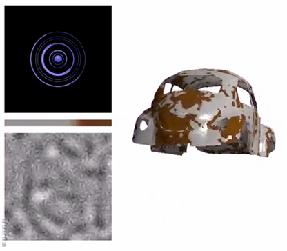

GAMES101课程笔记（七）——Advanced Topics in Rendering
引言
OK，这篇博客我们来介绍一些高级内容，课程PPT上的标题为“高级光线传播与复杂外观建模”。虽然听上去很难，但其实课程涉及到的部分都没有很深入的介绍，毕竟GAMES101还是属于入门级的课程，因此笔者认为这部分还是偏科普性的，相较于前面的部分（说的就是你，光线追踪），还是简单不少。
不过也因如此，本文大多数的内容都是纯文字，与之前的风格相比还是有点区别的。
随着博客的更新，这个系列也开始进入进入倒计时了，不管怎么样，希望自己的这些小小努力能够起到一些作用。
前文指路：
GAMES101课程笔记（一）——Transformation
GAMES101课程笔记（二）——Rasterization
GAMES101课程笔记（六）——Materials and Appearances
高级光线传播
无偏 vs. 有偏
在计算光照的时候，我们经常使用蒙特卡洛积分法，而具体实施的蒙特卡洛积分法又可以分为无偏和有偏两种。
无偏，即指使用蒙特卡洛积分法时，结果的期望和实际值永远是一致的；相应地，其他的方法就被归类于有偏的。
值得一提的是，有偏中有一种特殊情况，就是在有限的样本下，得不到期望的结果，但在样本无穷多时，却又能达到正确的结果，这种方法被特殊地归类于一致的，不过它的本质还是一种无偏方法。
接下来，我们将分别去看看，哪些光线传播算法是无偏的，哪些是有偏的。
无偏光线传播算法
Bidirectional Path Tracing——双向路径追踪
双向路径追踪（BDPT），顾名思义，是从两个方向开始生成路径。
在光线追踪一文中，我们介绍过路径追踪算法，当时，我们是从相机出发，寻找一条从相机到光源到光源的路径。而BDPT同时从光源和相机向外寻找路径，这种路径被称为半路径（下图中的实向量），然后将半路径的终点相连（下图中的虚线），就获得了一条路径。
BDPT有其独特的优势，例如下图这个场景中，BDPT（右图）的效果远比路径追踪（左图）要好：
在这个场景中，主要的光源集中在左上角的角落里，整个房间基本都是被间接光照亮的。
回忆光线追踪的过程，我们的第一次反射大概率是在漫反射表面上，光线很难被选择反射到光源处，所以使用路径追踪时，想要找到一条带有大量能量的路径是比较困难的。
而BDPT同时从光源引出半路径，因此漫反射的总会落到光源处，从而达到更好的效果。
但BDPT的缺点也非常明显，就是太难实现了（别看原理简单，真的很难），速度也非常慢
Metropolis Light Transport——MLT
这个算法是以Metropolis这个人的名字命名的，总之我们就直接称呼其简称MLT了，它同样是一种无偏算法。
MLT使用的原理是马尔科夫链，有过机器学习背景的读者应该会比较了解。马尔科夫链能够从当前样本，生成一个靠近的下一个样本，这与一般算法中的均匀选取或者随机选取有很大的差异。
蒙特卡洛方法中，我们可以用任意PDF来对目标函数进行积分，但各种PDF其实也有优劣之分，其中效果最好的的PDF其实是和目标函数形状一致时的PDF。而MLT引入马尔科夫链后，能够以任意形状的PDF来进行采样，这意味着它可以用更好的PDF来进行采样。
上图反映了MLT的特点，即非常擅长局部探索困难的光路。MLT的主要思想就是在已有的光路（图中蓝线）上，增添一个扰动，从而形成一条新的光路（图中橙线），以此类推，找到所有的光路。
上图中可以看出，在更复杂的场景下，MLT会有更好的表现。因为MLT只需要一条正确的光路作为种子，就可以源源不断地形成新光路。
MLT的缺点在于难以估计其收敛的时间，而且由于其局部特性，从每个种子向外扩散，因此收敛不一定均匀，一定程度上会导致画面变”脏“（上图），所以MLT通常不会被用来渲染动画。
（因为帧与帧之间不均匀的收敛会产生明显的“抖动”）
有偏光线传播算法
Photon Mapping——光子映射
光子映射是一种有偏的二阶段光线传播算法，非常适用于渲染含有caustics的场景：
（caustics在上一篇文章中有详细介绍）
接下来我们介绍光子映射算法的两个阶段，这里只介绍光子映射的一种方法。
首先来看第一阶段，在这个阶段，我们从光源出发，向外射出光子，正常进行反射和折射。不过一旦接触到Diffuse表面，我们就记录这个位置，认为该地方留下了一颗光子，如下图所示：
第二阶段，我们从相机出发，生成半路径，同样也是正常进行反射和折射，直到接触到Diffuse表面。
下图是光子映射的最后一步——局部密度估计，这一步的主要思路是：带有越多光子的地方，应该会更亮。
具体来说，对于第二步我们找到的接触点，去找到离它最近的N个光子，这N个光子会占据一个区域（上图阴影部分），光子数量除以该区域的面积，就获得了该处的密度。
显而易见的是，N的取值会大大影响最后的渲染效果，如果N的取值较小，会导致更多的噪声；反之若N取值过大，会导致模糊。
到这里其实就可以解释为什么光子映射是一种有偏算法，因为我们实质上是用了$\Delta N/\Delta A$来代替了$\mathrm{d}N/\mathrm{d}A$。
如果打出的光子够多，在场景中的密度更高，那么N个光子占据的面积就越小，从而$\Delta N/\Delta A$更逼近$\mathrm{d}N/\mathrm{d}A$，效果也就越真实。理论上说，只要光子是无限的，那么它就能呈现真实效果，所以说光子映射是一致的。
Vertex Connection and Merging
这个方法直译为顶点连接与合并，简称为VCM，是一种将BDPT和光子映射结合起来的方法。
上图给出了这个方法的大致示意图，上面那张表示BDPT的过程，在BDPT中，我们先生成半路径，再寻找连接点。
但BDPT连接时，实际上是将漫反射的光路给定向化了，假如出现了下面那张的情形，即两个半路径的终点几乎在同一个局部区域中时，那就不可能产生从$x^*_2$到$x_2$的漫反射，这两条半路径就相当于“作废“了。
而在VCM中，下图这种情况发生时，会将这个局部区域用光子映射的方式结合在一起。
VCM的实施有很多细节和困难，这里也是只介绍其大致思路。
Instant Radiosity——实时辐射度
接下来介绍另一种算法——实时辐射度算法（IR），它的主要思路是这样的：如果某个表面已经被照亮了，那我们可以认为它们是光源，用它们来照亮其它物体。
不难发现，这和“双向”的思路其实也是相通的。
IR算法能够快速高质量地生成漫反射表面的光照，但也存在缺点，比如下图：
可以看见在边缘相接处出现了很多奇怪的亮点，这主要是因为该方法对面积采样，而不是对立体角采样，而且该算法也不适用于镜面。
高级外观建模
我们之前提到过，外观=材质=BRDF，但事实上远不止此，在这里，我们介绍一些其他的外观建模方法。
PS：这部分内容都比较偏向介绍，没有深入具体的细节。
非表面模型
Participating Media——散射介质
散射介质指那些定义在空间中而非表面上的材质，例如云和雾这类材质。
当光线穿过散射介质时，会发生以下几种情形：
总的来说，其实就是吸收光线和放出光线，有些光线在穿过介质后被散射，有些光线穿过介质后被并入观测路径。
这里散射可就不是像漫反射一样的均匀散射了，为了定义该散射，引入了Phase Function（相位函数）来描述它，如下：
这里就规定了三种相位函数，对应三种散射情形。
当渲染散射介质时，就和在物体表面应用BRDF差不多，只是将物体表面的反射替换为散射介质的散射，如下图所示：
可以看见在示例的内部，我们同样生成路径，然后计算光照。
Hair Appearance——头发材质
现在来看另一种材质——头发，相较于我们之前讨论的“面”反射，头发材质关注光线和“线”之间的关系。
我们可以看到，当光线照射到头发上时，同时产生了无色和有色的高光，为了分析原因，我们介绍Kajiya-Kay Model，这是自研究头发开始，人们就广泛使用的一种模型：
图中的圆柱就是头发，我们认为光线照射到头发后，会在一个圆锥范围内进行散射，同时又有一部分光线朝四面八方散射（图中橘色部分），这部分类似漫反射。不过这个模型和真实的情况还是有出入的，下面是该模型的渲染效果：

现在被广泛应用的模型是Marschner Model，如下所示：
该模型中，光线会考虑TT和TRT两种情形，前者指的是光线进入头发，产生一次折射（T），再从头发传出，产生第二次折射（T）；后者指的是光线进入头发，产生折射（T），触碰到对侧头发壁厚，发生反射（R），最后再折射出去（T）。
下图是一个更详细的示意：
该模型的渲染结果就非常好：
Fur Appearance——毛发材质
我们刚才讨论了有关头发的渲染问题，那么动物的毛发是否能用相同的方式渲染？
很可惜，答案是不可以，如下图所示，直接在动物毛发上应用Marschner Model的效果并不好：
人的头发和动物的毛发在结构上是相似的，它们都包含有Cortex、Medulla和Cuticle三部分。
但区别在于，头发中Medulla非常纤细，而毛发中的Medulla则要粗很多，这意味着光线在毛发中更容易发生散射。
之前的Marschner Model还没有考虑到这个问题，通过引入Medulla，毛发的渲染会更加真实：
即使是对于头发，Medulla的引入也使得效果更加逼真：
这种改进后的模型就是Double Cylinder Model（双重圆柱模型），如下所示：
在该模型中，除了TT和TRT，还考虑了穿过medulla时的情况，也就是下图中的TTs和TRTs
从而最终的结果由这五种情况叠加产生：
（这个模型就是闫老师提出的）
Granular Material——颗粒材质
这里我们要研究的是由一堆颗粒堆积而成的材质，下图展示了很多颗粒材质，包括盐、米、面粉等等。
这种材质还是非常难做的，一种思路是将模型想象为几种颗粒按一定比例的构成进行渲染：
只是即使这样，也很难保证渲染的效率，这里也就不详细说了。
表面模型
Translucent Material——透射材质
很多时候我们会混淆透射材质和半透明材质的概念，它们实际上是不同的，透射材质中光线会在物体内部产生散射，再向外出射，而半透明材质一般没有散射这一环节。
透射材质中的一个代表性材质就是玉石：
这里牵涉到的物理模型是次表面散射模型，描述的就是刚才我们提到的过程：
次表面散射模型使用BSSRDF（Bidirectional Subsurface Scattering Reflection Distribution Function）来进行描述，这其实是对BRDF的扩展。BRDF中，我们只考虑方向，因为我们默认入射点和出射点是一致的，而在BSSRDF中，还要考虑出射点的位置：
所以计算光照时，不仅要对方向进行积分，还要对面积进行积分。
不过这种方法的计算量很大，我们可以用两个光源来模拟次表面散射：
至于为什么可以这么替代，我们就不详细展开了，总之这么做的效果是非常好的：
Cloth——布料
接下来我们来看布料，为了知道如何渲染布料，我们得先知道布料是如何构成的，布料的构成可以分为下面两个层级：
具体而言，就是Fiber（也就是最基础的纤维，例如羊毛）首先被缠绕成Ply（中文翻译应该是股？），然后Ply再被缠绕为Yarn，也就是一般我们所说的线。这些线经过编织，形成了我们看到的各色衣物：
不难想象，计算这样复杂的布料肯定是很困难的。首先可以确定的是，最后的渲染结果肯定与编织的方式有关，因此可以根据编织的方式定义BRDF：
不过这么做并不全面，因为不是所有布料的表面都是这种偏平整的表面，一些织物的表面的线会呈现出向外的特征，这时还使用BRDF就不太合适了。
一种解决办法是把布料当做散射介质，假想对象由无数个小单元组成，每个单元用散射介质的方式来进行渲染，这种方式虽然结果准确，但计算量极大：
另一种办法是逐Fiber进行渲染，缺点和刚才这一种是一致的，不过这么计算从理论上更加贴合实际的结果：
布料解算到现在都还是一个很重要的课题，也一直是渲染的难点。
Detailed Appearance——细节外观
我们已经聊了很多渲染理论和方法，但我们实际上手时，渲染出的图片却总感觉不真实：
最大的原因其实还是渲染的结果太“真实”了，现实中根本不可能存在这么完美的赛车和鼠标，表面完全光滑，没有一丝划痕。
在实际生活中，它们大都是长这样的：
之前我们提到过微表面模型的概念，这里重新贴一下该模型的示意图：
为了获得表面细节，我们可以在NDF上做出修改，如下所示：
一般我们统计获得的理想模型都是如上图左这样的，不过实际的NDF可能就更接近右边这种。
通过这种方式，我们可以为渲染对象增添不少的细节：
上图使用了200K*200K的法线贴图进行渲染，在蜗牛壳上出现了非常好的效果。
不过还是那个老问题——太慢了，光是这张图的渲染就要耗费大概20天的时间。这里计算慢的原因主要是使用微表面模型后，表面上的镜面微元太多了，从相机引出的射线少有能反射到光源上的（反之亦然）：
一种解决方案是不逐个计算镜面微元，而是把穿过单个像素的光线，视为照射到一个区域上，用该区域来计算反射：
这个区域的大小会影响我们的最终结果（这句话好像是废话），具体来说，区域越小，就更加还原细节；区域越大，则效果跟接近统计结果：
除此之外，法线贴图本身的样子也会影响P-NDF的样子：
如果再深入的话，就会出现更麻烦的事情。一旦细节的规模小于光的波长，我们就不能用现在的光学模型来进行建模了，此时需要进入到波动光学的范畴，但波动光学的内容实在是太难了（至少对笔者这种非物理专业的人来说），GAMES101课程也就没再深入讲解了。
（说实话，感觉讲了笔者可能也理解不了）
Procedural Appearance——程序化生成表面
程序化生成表面的思想是这样的：当我需要渲染某一点时，我不进行真实的计算，而是采用预先定义好的某种函数（或者极其简单的计算），直接获取材质信息。

这种函数被称之为Noise函数。注意，这种函数被定义在空间中，可以理解为是$f(x,y,z)$形式的，因此不论要渲染的对象形态是什么样的，都能通过该函数获取表面材质。
这种方式可以很方便地用于简单细节材质的创建，例如车辆表面的锈迹：

（这种车的应用场景，大概是游戏中路边那些随处可见的车，玩家不会很认真地去纠结它的细节）
这种方式在生成山峰和木头纹理时的效果还是非常不错的，是一种很好的替代计算的方案：
那么这篇文章的内容到此为止，我们下篇文章见！